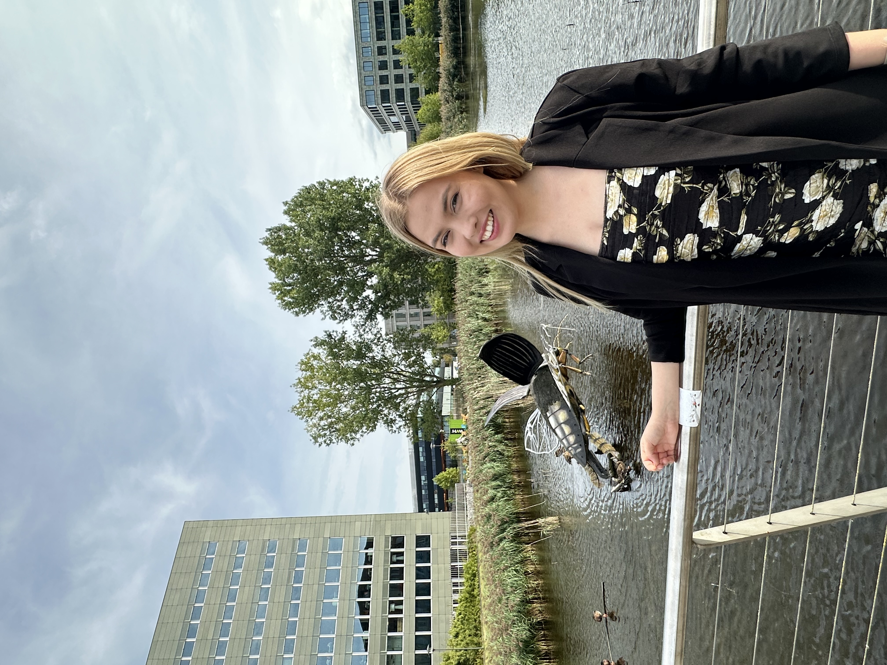

Hi! I'm Szonja, an MSc Bioinformatics graduate with a background at the intersection of life sciences, data analytics and artificial intelligence. I build reproducible pipelines that turn raw biological data into insight, from NGS reads to integrated multi-omics signatures.
A spread of pipelines, models and analyses, from raw NGS reads and protein structures to integrated multi-omics signatures and production data dashboards.
The stack I reach for across genomics, machine learning, structural biology and data engineering.

I completed my MSc in Bioinformatics at Wageningen University & Research (WUR) in the Netherlands, where my thesis explored the phylogenomic evolution of photosynthesis-related genes across 322 angiosperm genomes using HPC pipelines. Before this, I completed my BSc in Molecular Genetics & Biotechnology in Australia.
I enjoy working with real biological datasets to solve problems in genomics, structural biology and drug discovery, building differential expression workflows, single-cell analyses, variant-calling pipelines, molecular docking studies and multi-omics integration models with survival evaluation.
Beyond the computational biology side, I also spent 6 months on the industry side during a data analytics internship in the R&D team at FrieslandCampina, building Power BI QC dashboards and applying statistical outlier detection to nutrient data, bridging rigorous science with stakeholder-ready analytics that teams could act on day to day.
Right now I'm looking for a role where I can keep turning complex life science data into clear decisions, whether that's in bioinformatics, computational biology or data science related roles. If that sounds like your team, I would love to hear from you!
I'm actively looking for bioinformatics and data science opportunities. If you're hiring or just want to talk science and data, my inbox is open.